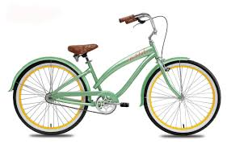

Fixed-gear bikes, or fixies, lack the freewheel mechanism that allows riders to coast. They have only one gear. Traditionally associated with track cycling, fixed-gear bikes have gained popularity with urban biking enthusiasts for their light weight, low maintenance, and simple riding style. Great for commuters who don't want to arrive to work sweaty and out of breath, electric assist bikes feature battery-powered motors to help make climbing hills and travelling long distances a little easier. You can adjust the amount of assistance you receive from the motor-built-in sensors monitor how much pressure you're putting on the pedals and apply battery power accordingly. These bikes are heavier than most bikes, making them a little harder to ride when the motor is turned off.
prices $1.00 - $999.99
in-stock
While they don't go as fast as road bikes on the road, bike-shop quality mountain bikes are equipped to handle rugged trails and gravel roads. They typically feature lower gears, giving you the ability to climb steep terrain. The straight, wide handlebars give you better steering control and keep your fingers on the brake levers, so you are always at the ready no matter what surprise is around the corner. They also include better breaking systems, lower step-over clearance frames, and wider tires than most road bikes. Some higher priced models also feature lightweight frames. Overall, they are amazingly durable riding in off-road terrain.
prices $1000.00 - $9999.99
custom order
If you're looking for a comfortable bike with a classic look, consider a cruiser. The bicycle standard from the 1930s through 1950s, cruisers feature wide tires and padded seats for a more comfortable riding experience. Curved, upright handlebars put the rider in a better position to view the world around them. Cruisers typically have heavier frames, but some newer models use lightweight aluminum frames. The traditional cruiser has just one gear, but more modern cruisers come with three to seven speeds. Also called beach bikes or boulevardiers, these classic bikes work best on flat terrain.
prices $100,000 - $999999.99
backordered
Items are update weekly.